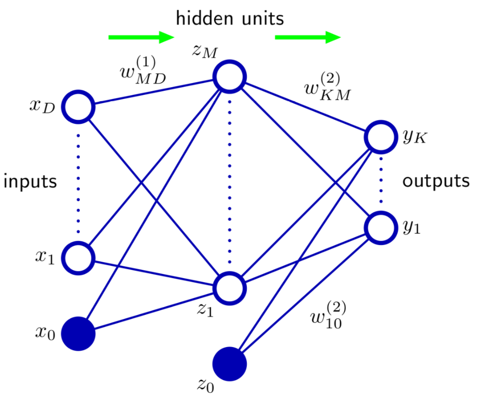
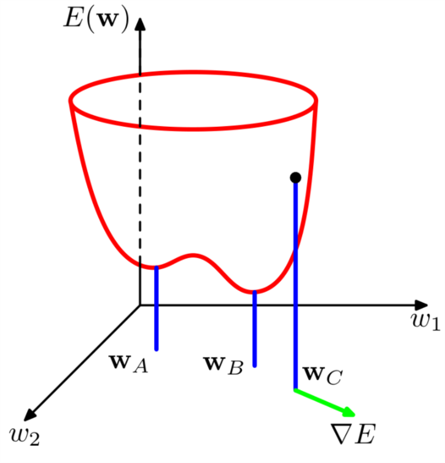

神经网络和后向传播算法
目录
1 简介
在分析过回归和分类问题过程中，我们的基本思路是通过对一些固定的基函数进行线性组合，然后针对某个损失函数进行最优化处理。这个分析方法帮助我们揭示了机器学习的基本原理，但是并不代表这些方法在实际应用过程中就有很大价值。它们的实用性因为维度诅咒问题 大打折扣。为了对大规模数据使用这些模型，我们需要针对数据调整基函数。基函数的优化在理论和工程领域都具有举足轻重的作用。
支持向量机（Support vector machines,SVM）通过定义以数据为中心的基函数来解决这个问题，在训练过程中选择这些基函数的子集达到优化目的。SVM的一个优点是目标函数是凸的，因此可以按照凸优化的一套理论快速的获取最优解。相关向量机(Relevance Vector Machine, RVM)和SVM一样也是从一套固定的基函数中搜取一个子集。不同之处在于，RVM可以生成基于概率的输出。但是，这样做会导致训练过程中，RVM需要面对非凸目标函数的优化问题。
不同于SVM或者RVM在优化过程中会改变基函数的个数，另一个办法是固定基函数的个数，在训练过程中优化这些基函数的系数，即：使这些基函数的系数自适应于训练数据。截止目前，模式识别问题中，最成功的固定基函数个数的模型是前向神经网络（feed-forward neural networks），也叫作多层感知机（multilayer perceptron）。在许多应用场景中多层神经网络都可以产生非常紧凑的模型，并且训练速度也很快。当然，这是需要付出代价的：在神经网络中，我们需要面对的很多问题不再是凸优化问题。这意味着：这些自适应基函数系数往往有很多局部最优解，我们要从这些局部最优解中找到那个全局最优解。
本文首先考虑神经网络的数学模型及其对应的网络结构。然后，讨论非线性优化问题的最优解。对非线性问题的优化要求评估对数似然函数相对于网络系数的导数，这可不是一个小问题。对于较大规模的神经网络，网络系数构成的矩阵规模往往非常大（这样的矩阵往往是Jacobian矩阵或者Hessian矩阵）。所幸，我们有错误后向传递算法（error backpropagation）。这一算法可以高效的完成对导数矩阵的评估。最后我们考虑神经网络的多种正则化方法，并讨论这些方法之间的联系。
2 前向网络函数
回归或者分类问题的数学模型可以表示为：
\begin{equation} \label{eq:1} y(\mathbf{x},\mathbf{w}) = f\bigg( \sum_{j=1}^{M} w_{j}\phi_{j}(\mathbf{x}) \bigg) \end{equation}其中在分类问题中\(f(\cdot)\)是非线性激活函数，在回归问题中\(f(\cdot)\)是恒等函数。在神经网络中，我们的目标是在训练过程中调整基函数\(\phi_{j}(\mathbf{x})\)对应的参数使得模型达到最优。当然基函数的选择有好多种，基函数可以是输入的非线性函数。首先我们构建\(M\)个输入的线性组合：
\begin{equation} \label{eq:2} a_{j} = \sum_{i=1}^{D}w_{ji}^{1}x_{i} + w_{j0}^{1} \end{equation}其中\(j = 1,\ldots ,M\)，上标\(1\)表示神经网络的第一层。其中\(w_{ji}^{1}\)是权重，\(w_{j0}^{1}\)是偏差。这些\(a_{j}\)叫做激活子，每一个激活子在下一层网络中通过一个可微的非线性激活函数\(h(\cdot)\)生成\(z_{j}\):
\begin{equation} \label{eq:3} z_{j} = h(a_{j}) \end{equation}这些量对应式 (\ref{eq:1})中的基函数输出。在神经网络中我们称\(z_{j}\)为隐单元。非线性函数\(h(\cdot)\)通常是具有\(S\)形状的函数比如logistic函数或者tanh函数。这些函数再一次的通过线性组合生成输出：
\begin{equation} \label{eq:4} a_{k} = \sum_{j=1}^{M}w_{kj}^{2}z_{j} + w_{k0}^{2} \end{equation}其中\(k= 1,\ldots ,K\),并且\(K\)是输出的个数。式 (\ref{eq:4})对应第二层网络的变换。最后输出单元通过激活函数生成输出\(y_{k}\)。激活函数的选择依赖于数据的内在特征以及问题模型。对于回归问题，激活函数是恒等函数，即：
\begin{equation} \label{eq:5} y_{k} = a_{k} \end{equation}对于二进制分类，输出激活函数是logistic函数：
\begin{eqnarray} \label{eq:6} y_{k}&=&\sigma(a_{k}) \\ \sigma(a) &=&\frac{1}{1+\exp(-a)} \end{eqnarray}对于结果大于2的分类问题，使用softmax激活函数。综合式 (\ref{eq:2})和 (\ref{eq:4})我们得到整个网络函数的数学模型为：
\begin{equation} \label{eq:7} y_{k}(\mathbf{x},\mathbf{w}) = \sigma \bigg( \sum_{j=1}^{M}w_{kj}^{2} h\bigg(\sum_{i=1}^{D}w_{ji}^{1}x_{i} + w_{j0}^{1} \bigg) + w_{k0}^{2}\bigg) \end{equation}从式 (\ref{eq:7})整体看来，这个网络就是从输入\(\mathbf{x}\)到输出\(\mathbf{y}\)的一个非线性函数，参数为\(\mathbf{w}\)。整个函数可以表示如图1所示。

图 1: 式~(\ref{eq:7})所示的网络模型
图1 和式 (\ref{eq:7})表达的是一个同一概念：前向神经网络。在这个网络中信息从做到右传播。式 (\ref{eq:7})还可以写成更简洁的形式：
\begin{equation} \label{eq:8} y_{k}(\mathbf{x},\mathbf{w}) = \sigma \bigg( \sum_{j=0}^{M}w_{kj}^{2} h\bigg(\sum_{i=0}^{D}w_{ji}^{1}x_{i} \bigg) \bigg) \end{equation}接下来我们考虑一下式~(\ref{eq:8})中的系数个数，首先我们需要明白对于~(\ref{eq:8})所示的网络模型，找到一个最优解\(\mathbf{w}\)意味着找到了一堆最优解。考虑对 (\ref{eq:8})所示的网络模型有\(M\)个隐藏单元，这些隐藏单元采用\(tanh\)函数作为激活函数，这些隐藏单元和输入输出采用全连接。如果我们改变某一个隐藏单元对应的所有权重的符号（取反），则对于特定输入，激活单元的输出也取反。因为\(\tanh(-a) = -\tanh(a)\)，所以通过改变所有权重的符号和激活函数的符号，输入输出对应的网络模型没有发生变化。这样我们就找到了两个不一样的权重系数但是对应的映射关系是一样的。对于\(M\)个隐藏单元，有\(M\)个可以翻转符号的机会。因此任意给定的权重矢量都是\(2^{M}\)个等效的权重矢量中的一个。另一方面考虑\(M\)隐藏单元的排列，我们会有\(M!\)倍个解。因此对于每一个可能的解，我们都有\(M!2^{M}\)个等效的解。
3 训练网络
所谓的训练网络过程就是通过各种方法求得图 1 所示的网络中最优权重系数的过程。所谓的最优是针对各种误差函数而言的，一种常用的函数是平方和误差函数，给定一个大小为\(N\)的输入序列\(\mathbf{x}_{n},n=1,\ldots ,N\)，还有其对应的目标矢量\(\mathbf{t}_{n}\),那么误差函数可以表示为：
\begin{equation} \label{eq:9} E(\mathbf{w}) = \frac{1}{2}\sum_{n=1}^{N} \| \mathbf{y} ( \mathbf{x}_{n},\mathbf{w}) - \mathbf{t}_{n} \|^{2} \end{equation}3.1 回归问题
也可以从概率的角度证明通过最大化似然函数等效于式 (\ref{eq:9})所示的误差函数，为了保证行文的流畅，我不准备岔开细讲。接下来我们针对式 (\ref{eq:9})做优化。首先考虑回归问题，像之前那样我们可以把输出的激活函数定为恒等函数：
\begin{equation} \label{eq:10} y_{k} = a_{k} \end{equation}这个时候式 (\ref{eq:9})对\(a_{k}\)求偏导就有：
\begin{equation} \label{eq:11} \frac{\partial E}{\partial a_{k}} = y_{k} - t_{k} \end{equation}这个特性非常重要，将在错误后向传输算法中发挥重要作用。
3.2 二类分类问题
对于二类分类问题，我们有一个目标变量\(t\)，\(t=1\)对应第一类，\(t=0\)对应第二类。同样，像之前那样我们可以把输出的激活函数定为logistic函数：
\begin{equation} \label{eq:12} y =\sigma(a) = \frac{1}{1 + \exp(-a)} \end{equation}因此\( 0 \leq y(\mathbf{x},\mathbf{w}) \leq 1\)，我们可以把\(y(\mathbf{x},\mathbf{w})\)解释为\(p(t=1| \mathbf{x})\)的条件概率，则\(p(t=0)| \mathbf{x} \)的条件概率是\(1-y(\mathbf{x},\mathbf{w})\)。那么目标变量的条件分布是一个伯努利分布：
\begin{equation} \label{eq:13} p(t|\mathbf{x},\mathbf{w}) = y(\mathbf{x},\mathbf{w})^{t} (1-y(\mathbf{x},\mathbf{w}))^{1-t} \end{equation}假设训练集合是一些列相互独立的观察，误差函数（负对数似然函数）就是一个熵函数：
\begin{equation} \label{eq:14} E(\mathbf{w}) = -\sum_{n=1}^{N} \bigg( t_{n}\ln y_{n} + (1-t_{n}) \ln(1-y_{n}) \bigg) \end{equation}其中\(y_{n} = y(\mathbf{x}_{n},\mathbf{w})\).
3.3 多个二类分类问题
假设我们有\(K\)个二类分类问题，我们可以使用一个有\(K\)个输出的网络来模拟。这\(K\)各输出都使用logistic激活函数。每一个输出都是一个二类标签\(t_{k}\in \{0,1\},k=1,\ldots ,K\)。假设这\(K\)个输出是相互独立的，则目标输出的分布可以表示为：
\begin{equation} \label{eq:15} p(\mathbf{t}|\mathbf{x},\mathbf{w}) =\prod_{k=1}^{K} y_{k}(\mathbf{x},\mathbf{w})^{t_{k}} (1-y_{k}(\mathbf{x},\mathbf{w}))^{1-t_{k}} \end{equation}考虑负对数似然函数，误差函数可以表示为：
\begin{equation} \label{eq:16} E(\mathbf{w}) = -\sum_{n=1}^{N}\sum_{k=1}^{K} \bigg( t_{nk}\ln y_{nk} + (1-t_{nk}) \ln (1-y_{nk})\bigg) \end{equation}其中\(y_{nk} = y_{k}(\mathbf{x}_{n},\mathbf{w})\)。
3.4 多类分类问题
对于有多个类分类问题（每一个输入可能会被标记为\(K\)个中的一个），二进制目标变量\(t_{k}\in \{0,1\}\)有\(\tfrac{1}{K}\)的概率标记正确。网络输出可以解释为：
\begin{equation} \label{eq:17} y_{k}(\mathbf{x},\mathbf{w}) = p(t_{k} = 1 | \mathbf{x}) \end{equation}误差函数为：
\begin{equation} \label{eq:18} E(\mathbf{w}) = -\sum_{n=1}^{N}\sum_{k=1}^{K}t_{kn}\ln y_{k}(\mathbf{x}_{k},\mathbf{w}) \end{equation}其对应的输出激活函数是softmax函数：
\begin{equation} \label{eq:19} y_{k}(\mathbf{x},\mathbf{w}) = \frac{\exp(a_{k}(\mathbf{x},\mathbf{w}))}{\sum_{j}\exp(a_{j}(\mathbf{x},\mathbf{w}))} \end{equation}其中\(0\leq y_{k} \leq 1\),\(\sum_{k} y_{k} = 1\)。
3.5 激活函数选择
针对不同的问题类型，我们需要选择不同的激活函数和误差函数：
- 对于回归问题，激活函数选择恒等函数，误差函数选择平方和误差；
- 对于二类分类问题，激活函数选择logistic函数，误差函数为熵函数；
- 对于多类分类问题，激活函数选择softmax函数，误差函数为多类熵函数；
无论哪种误差函数，误差函数相对于激活单元输出的导数都具有式 (\ref{eq:11})的形式。这位我们实用误差后向传递算法提供了基础。
3.6 寻找\(\mathbf{w}\)
从几何直观上理解\(E(\mathbf{w})\)的最小化问题会更容易。假设\(E(\mathbf{w})\)如图2所示.

图 2: \(E(\mathbf{w})\)示意图
在图2中，如果我们在\(\mathbf{w}\)的空间上移动一小步从\(\mathbf{w}\)到\(\mathbf{w} + \delta \mathbf{w}\)，那么误差函数也会相应的发生变化\(\delta E \approx \delta \mathbf{w}^{T}\nabla E(\mathbf{w})\)，其中矢量\(\nabla E(\mathbf{w})\)指向错误增大速率最大的方向。因为\(E(\mathbf{w})\)是\(\mathbf{w}\)的平滑连续函数。误差函数的最小值出现在梯度为零的位置：
\begin{equation} \label{eq:20} \nabla E(\mathbf{w}) = 0 \end{equation}否则，我们可以把\(\mathbf{w}\)向\(-\nabla E(\mathbf{w})\)方向移动一小步减小误差，直到\(\nabla E(\mathbf{w}) = 0\)。我们的目的是为了找到\(\mathbf{w}\)使得\(E(\mathbf{w})\)取最小值。但是正如图2 所示，\(E(\mathbf{w})\)不是凸的，所以存在很多局部最小值。对于一个局部最小值，我们之前也分析过，有\(M!2^{M}\)个等效的解。
在寻找\(E(\mathbf{w})\)最小值的过程中，解析解是不用指望了。我们只能通过数值计算来得到最小值对应的\(\mathbf{w}\)。非线性函数的优化问题是一个古老的问题，有很多现成的方法可以使用。许多方法都需要选择一些\(\mathbf{w}\)的初始值，然后逐步的移动\(\mathbf{w}\)：
\begin{equation} \label{eq:21} \mathbf{w}^{(\tau +1)} = \mathbf{w}^{(\tau)} + \Delta \mathbf{w}^{(\tau)} \end{equation}其中\(\tau\)是迭代的步长。不同的算法会采用不同的\(\Delta \mathbf{w}^{(\tau)}\)。对于每一次迭代，这些算法都需要在\(\mathbf{w}^{(\tau +1)}\)处重新评估\(\nabla E(\mathbf{w})\)。
为了理解梯度信息的作用，我们把误差函数进行泰勒展开。通过把误差函数进行泰勒展开，我们可以获得一个误差函数的局部近似：
\begin{equation} \label{eq:22} E(\mathbf{w}) \approx E(\hat(\mathbf{w})) + (\mathbf{w} - \hat{\mathbf{w}})^{T}\mathbf{b} + \frac{1}{2}(\mathbf{w} - \hat{\mathbf{w}})^{T} \mathbf{H} (\mathbf{w} - \hat{\mathbf{w}}) \end{equation}在展开的过程中我们删掉了高阶项。其中\(\mathbf{b}\)是误差函数在\(\hat{\mathbf{w}}\)出的梯度：
\begin{equation} \label{eq:23} \mathbf{b} = \nabla E|_{\mathbf{w} = \hat{\mathbf{w}}} \end{equation}\(\mathbf{H}\)是Hessian矩阵，其定义为：
\begin{eqnarray} \label{eq:24} \mathbf{H}&=& \nabla \nabla E \\ (\mathbf{H})_{ij} &=& \frac{\partial}{\partial w_{i}\partial w_{j}} \bigg|_{\mathbf{w} = \hat{\mathbf{w}}} \end{eqnarray}把式 (\ref{eq:22})所示的泰勒近似对\(\mathbf{w}\)求梯度则有：
\begin{equation} \label{eq:25} \nabla E \approx \mathbf{b} + \mathbf{H} (\mathbf{w} - \hat{\mathbf{w}}) \end{equation}对于足够接近\(\mathbf{w}\)的点\(\hat{\mathbf{w}}\)，式 (\ref{eq:22})和 式 (\ref{eq:25})具有很好的精度。假设式 (\ref{eq:22})在\(\mathbf{w}^{*}\)处有一个最小值，则\(\nabla E = 0\)，式 (\ref{eq:22})变为：
\begin{equation} \label{eq:26} E(\mathbf{w}) = E(\mathbf{w}^{*}) + \frac{1}{2} (\mathbf{w} - \mathbf{w}^{*})^{T} \mathbf{H} (\mathbf{w} - {\mathbf{w}^{*}}) \end{equation}其中\(\mathbf{H}\)是在\(\mathbf{w}^{*}\)处的Hessian矩阵。为了从几何直观上解释式 (\ref{eq:26})，我们对\(\mathbf{H}\)进行SVD分解，则有：
\begin{equation} \label{eq:27} \mathbf{H}\mathbf{u}_{i} = \lambda_{i}\mathbf{u}_{i} \end{equation}其中\(\mathbf{u}_{i}\)是规范正交基中的矢量。我们把\(\mathbf{w} - \mathbf{w}^{*}\)展开为特征向量的线性组合，则：
\begin{equation} \label{eq:28} \mathbf{w} - \mathbf{w}^{*} = \sum_{i}\alpha_{i}\mathbf{u}_{i} \end{equation}这个过程可以看做把坐标系统转换到以\(\mathbf{w}^{*}\)为中心的过程。坐标轴的方向也旋转为特征矢量所指的方向，记得对多维高斯随机变量的分析 么？
通过以上一些列变换，式 (\ref{eq:26})变为：
\begin{equation} \label{eq:29} E(\mathbf{w}) = E(\mathbf{w}^{*}) + \frac{1}{2}\sum_{i}\lambda_{i}\alpha_{i}^{2} \end{equation}3.7 计算复杂度
现在我们回头看看式 (\ref{eq:22})，误差函数通过\(\mathbf{b}\)和\(\mathbf{H}\)确定，这里一共有\(W(W+3)/2\)个独立的元素（因为\(\mathbf{H}\)是对称的）,\(W\)是\(\mathbf{w}\)的维度。因此式 (\ref{eq:22})最小值的确定依赖于\(\mathcal{O}(W^{2})\)个参数。如果我们不利用梯度信息我们必须优化\(\mathcal{O}(W^{2})\)个方程，每一个都要\(\mathcal{O}(W)\)个步骤。因此如果不利用梯度信息，计算出式~(\ref{eq:22})最小值的计算复杂度是\(\mathcal{O}(W^{3})\)。
现在考虑到梯度信息，因为每一次评估\(\nabla E\)带来\(W\)个新的信息，我们希望在\(\mathcal{O}(W)\)个梯度评估中找到误差函数最小值。在即将介绍的反向传递算法中，每一次评估\(\nabla E\)确实只需要\(\mathcal{O}(W)\)步计算。因此综合看来找到误差函数最小值只需要\(\mathcal{O}(W^{2})\)的计算量。因此，梯度信息的使用使得训练大规模神经网络成为可能。
3.8 梯度下降法
利用梯度信息的最简单方法是更新\(\nabla E(\mathbf{w})\)时选择一个小的步长，指向梯度减小的方向：
\begin{equation} \label{eq:30} \mathbf{w}^{(\tau+1)} = \mathbf{w}^{(\tau)} - \eta \nabla E(\mathbf{w}^{(\tau)}) \end{equation}其中\(\eta > 0\)是所谓的学习速率。每一次更新，对于新的权重矢量\(\mathbf{w}^{(\tau + 1)}\)都需要从新计算梯度。因为误差函数与所有的训练数据集合有关，所以每一步更新\(\nabla\)都需要重新操作所有的训练数据。这种算法叫做批量处理算法。每一步更新权重矢量\((\mathbf{w})\)都朝向误差函数降低的最小的方向。这叫做最大梯度下降法。
对于批量优化算法，有许多高效的方案比如共轭梯度，准牛顿迭代。这些方法都比简单的梯度下降法要鲁棒且高效。但是不管哪种实现方法都不能改变神经网络优化的非凸性质。为了克服这个问题，我们可以同时跑多次梯度下降法，每次用不同的初始值。最后对收敛的多个\(\mathbf{w}\)进行性能对比。
批量处理算法的缺点是显而易见的：需要一次性缓存大量数据。如果能够在线实时更新就好了。实际上，基于最大似然函数的误差函数是有一些列误差项求和获得的：
\begin{equation} \label{eq:31} E(\mathbf{w}) = \sum_{n=1}^{N} E_{n}(\mathbf{w}) \end{equation}在线的梯度下降法，一次根据一个数据点更新\(\mathbf{w}\)：
\begin{equation} \label{eq:32} \mathbf{w}^{(\tau + 1)} = \mathbf{w}^{(\tau)} - \eta \nabla E_{n}(\mathbf{w}^{(\tau)}) \end{equation}式~(\ref{eq:32})所示的更新过程一次只处理一个数据。
4 错误后向传递算法
本节的任务是找到一个评估误差函数\(E(\mathbf{w})\)梯度的高效算法。这个算法叫做错误后向传递算法。